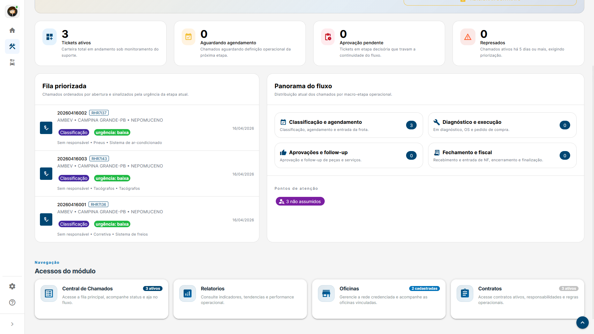
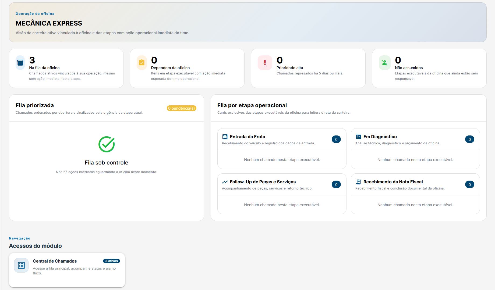
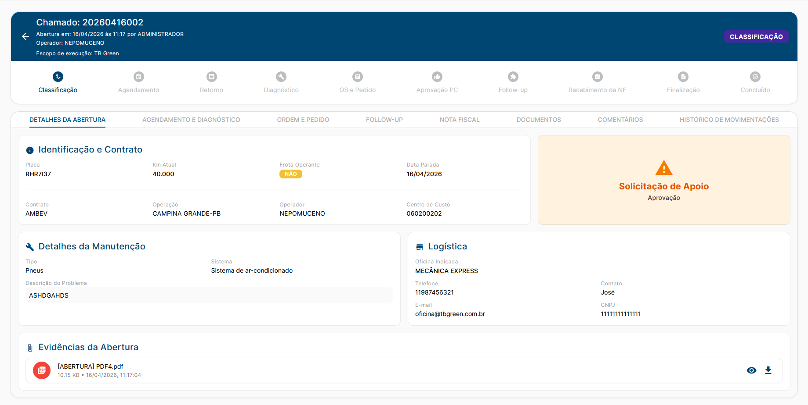
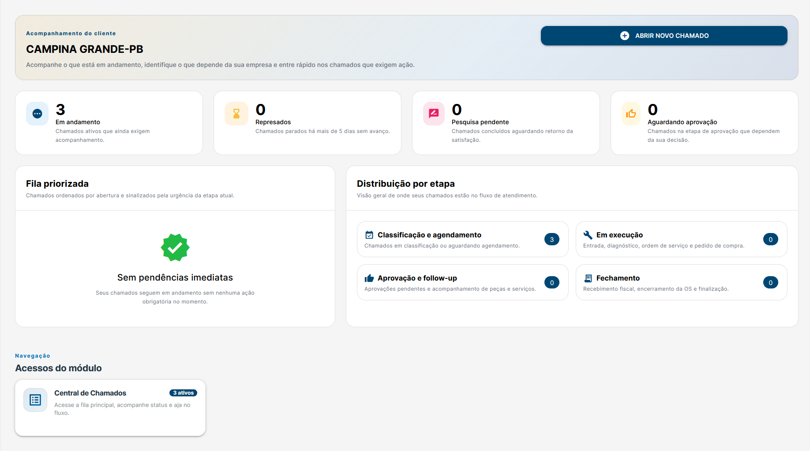

Visão geral e indicadores
Dashboard consolidado com métricas de chamados ativos, gargalos operacionais e pendências críticas.
Muito mais que um sistema de chamados: uma plataforma completa de orquestração operacional. Controle de ponta a ponta, governança granular e eficiência em tempo real.
O TB Green transforma processos manuais e reativos em um fluxo estruturado, rastreável e orientado à prioridade, integrando Suporte, Cliente e Oficina.
Da abertura do chamado à pesquisa de satisfação, passando por OS, peças, aprovações de alçada e notas fiscais em um único fluxo.
Controle de acesso por etapa e perfil. Permissões estritas garantem transições contextuais e reduzem o risco de intervenções indevidas.
Atualizações síncronas que eliminam atrasos de informação, garantem a confiabilidade das filas e reduzem o retrabalho operacional.
Todas as informações gravitam ao redor do chamado: veículo, oficina, anexos, comentários, datas, responsabilidades e status em um só lugar.
Métricas consolidadas que permitem à operação agir por prioridade, identificando gargalos, chamados estagnados e pendências críticas.
Interface construída para orientar a execução: listas priorizadas e formulários por etapa deixam claro qual é a próxima ação útil no processo.
O sistema entrega a experiência exata para quem está operando, evitando sobrecarga visual e acelerando a tomada de decisão.
A operação passa a enxergar claramente o que está aberto, parado ou dependendo de terceiros. Acelera a leitura de cenário e elimina alinhamentos informais paralelos.
Dashboard com indicadores de criticidade. A operação age por prioridade e urgência, não por navegação cega. Reduz o tempo de veículo parado.
Integrado nativamente ao ERP (Protheus), comitês de aprovação, NFs e gestão de contratos. A realidade da manutenção refletida no sistema.
Conheça as principais interfaces da plataforma, desenhadas para garantir fluidez, clareza e foco na execução.

Dashboard consolidado com métricas de chamados ativos, gargalos operacionais e pendências críticas.

Organização clara do trabalho por etapa, priorizando urgências e ações imediatas na área técnica.

Visão centralizada de todas as informações, documentos em anexo, histórico de status e comunicações do caso.

Interface de transparência e interação, permitindo aprovações de orçamentos e respostas rápidas.
Uma fundação sólida e escalável preparada para absorver o crescimento da operação mantendo o máximo de controle, governança e produtividade.